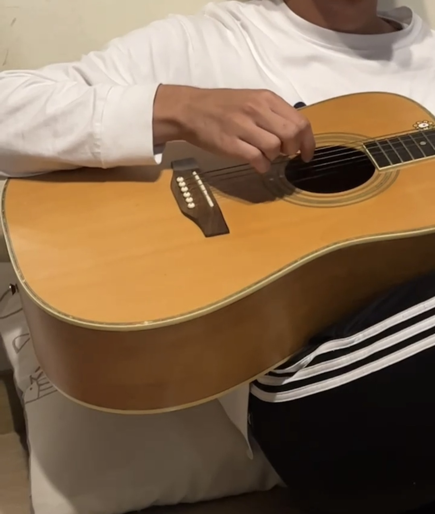
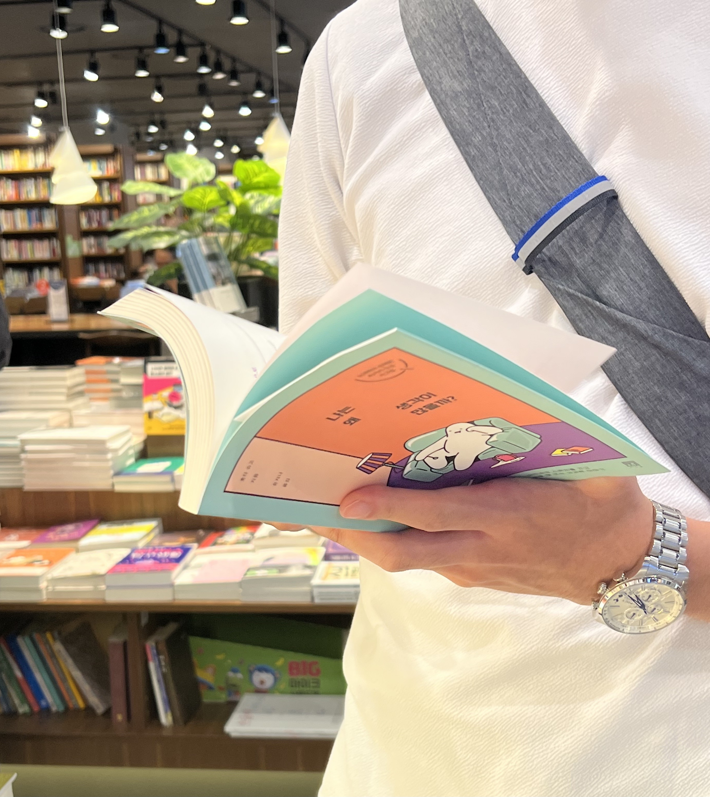

가천대학교 · 2021.03 ~ 2026.02
대학 시절 작곡, 심리학, 창업 3가지 전공을 펼쳤습니다.

주전공
중학교 시절 취미로 시작한 기타 연주를 계기로 음악에 관심을 갖게 되었습니다.

복수전공
고교 시절부터 독서를 통해 관심 가졌던 심리학을 복수전공했습니다.
융합전공
학생 창업에 관심이 생겨 교내 스타트업 칼리지에 지원해 창업학기제를 수료했습니다.